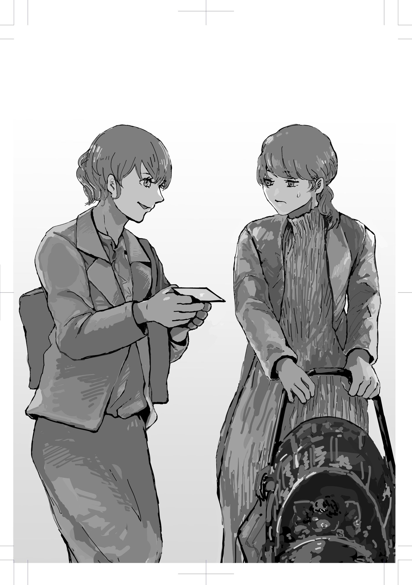

無意味な労働の数々
さっきニケはなんて言ったっけ。現代の労働は必要ない？ いったいどういう意味だろう？ この社会から労働がなくなれば、家も食べ物も服も生産されないし、ゲームや漫画といった娯楽を楽しむこともできない。どうして「必要ない」なんて言えるだろうか？
ニケは労働に不思議な定義を与えていた。「他者より強制される不愉快な営み」だったっけ。たしかに労働には強制や不愉快といった雰囲気がつきまとう。でも、先生に叱られないために渋々掃除当番に取り組むように、強制しなければ誰も必要な労働に取り組もうとは思わない。ならば、強制されることも不愉快であることも仕方ないんじゃないだろうか？ 労働は、やっぱり必要なはずだ。
「・・・必要のない労働なんてあるの？」
「逆になんで労働が必要やと思ったん？」
「え？」
そりゃあ、必要に決まってるじゃないか。
「働いたことのある大人やったらみんな知ってるで。世の中は無駄な労働で溢れかえってることをな。ブルシット・ジョブって検索してみたらええわ」
「ブルシット・・・？」
「まぁそれはどうでもええ。とにかく、ちょっと考えてみてくれ」
ニケはわずかな幕間の時間を終えて、さっきまでの役者じみた語り口に戻っている。
「たとえば少年と俺が二人きりで無人島に漂着したとしよう」
「あんまり想像したくない状況だね」
「で、目の前に二人が一ヶ月生き延びられる分の食糧が置いてあるとしよう。で、穴を掘っては埋める作業を十回早く繰り返した方がそれを総取りできるとしよう」
「どういうこと？」
「まぁ聞いてくれや。とにかくそういう状況やねん。なら、俺も少年も必死で穴を掘って埋めようとするよな？」
「うーん、それなら二人で分け合おうとすると思うけど？」
「それが賢いわな。でも、どっちにしろそのゲームをやらなあかんとしよう。神様かなにかに強制されてるんや。ほんでゲームに勝ったら相手に分け与えようが、それは勝者の自由や」
「神様ね・・・」
「相手が勝っても分けてくれると信じるなら、ゲームを本気でやる必要はないけど・・・」
「その確証がないなら、とりあえず自分が勝とうとする・・・かな？」
「せやろ。なら、必死でゲームをやるだけじゃなくて、事前にちょっと練習もするやろうな」
「そうだね」
「でも、無駄やろ？」
「そりゃあ、そんなバカなことをする必要はないね。だって、穴を掘って埋めてもなんの意味もないんだし、ゲームなんて適当にやりすごして食糧を二人で分け合えばいい。そして、余った体力で狩りや農業にチャレンジするか、家をつくるか、脱出用の舟をつくった方がいいね」
「せやろ。つまり個人にとっては『仕方ない』と思える穴掘りゲームも、俺と少年・・・つまり社会全体としてみれば無駄なんや。ほんで、たとえ話はここまでや。お金をもらうための労働が、穴掘りゲームみたいになってるとしたらどうや？」
「え？」
「労働が分け前を奪い合うだけの競争になってるんやとすれば、どう思う？」
もしそうなら無駄だ。でも、あまりにも現実と違いすぎてたとえ話になっていない。
「でも労働って、奪い合いではないよね？ どちらかといえば狩りや農業みたいに、食糧を増やすことに近いんじゃないの？」
「それが勘違いなんや。労働には二種類あってな、経済活動と政治活動っていうのがある」
「なにそれ？」
「経済活動は少年がさっき言ったように食糧をつくる行為も含まれるし、椅子やテーブルをつくる行為もそうや。あとは子どものおむつを替えたり、荷物を運んだり、トラックをメンテナンスしたり・・・人やものの世話、運搬も含まれる。労働と聞いて真っ先に思い浮かぶのは、こういう経済活動やろな」
「そうだね。逆にそれ以外の労働ってなに？」
「たとえば・・・あそこでスーツ姿の女性がベビーカーを押した母親に話しかけてるやろ？」
話に夢中になって気づかなかったが、さっき視界に入った若い母親に、スーツの女性が話かけていた。
「うん」
「内容が聞こえへんからわからんけど、あれはたぶん保険の営業や。『子どものために保険に入りませんか？』っていう営業をかけとる」
「それがどうかしたの？」
「営業は、さっきの経済活動に含まれるか？」
「うーん、ものをつくるわけでもないし、人やものの世話をするわけでもないね」
「そう。それはつまり『うちの商品を買ってくれ』と働きかけて、富の移動に影響を与えようとする営みなんや」
「富の移動？」
「むずかしく言うたけど、要は金を手に入れるための活動や。これをアンチワーク哲学では政治活動って呼ぶねん」
「ふーん」
政治活動。なんともイメージの湧きにくい言葉だ。ニケにはやっぱりネーミングセンスがない。
「営業以外に政治活動ってなにがあるの？」
「少年はＹｏｕＴｕｂｅを観るか？」
「まぁ人並みには観るけど」
「広告が出てきてうざいと思うやろ？」
「まぁそうだね。早く動画を観たいのに、鬱陶しいなぁと思うよ」
「広告も政治活動や。広告ってのは、『うちの商品を買ってくれ』と働きかける行為やろ。ＹｏｕＴｕｂｅの広告だけではなくて、テレビコマーシャルも、ポストに入ってるチラシも、新聞広告も、街頭の広告も、ぜんぶそうやな」
「そうだね」
「さて、さっきの無人島の話と照らし合わせて考えよか。『経済活動』が狩りや農業やとすれば、『政治活動』は穴掘りゲームに夢中になることを意味するわけやな」
「でもさ、広告や営業は穴掘りゲームみたいにまるっきり無駄ってわけでもないでしょ？ 広告を見て素敵な商品の存在に気づくこともあるし」
「そうか。なら少年はＹｏｕＴｕｂｅの広告を百回見たとして、何回素敵な商品に出会えるやろか？」
動画を観ている場面を思い出す。そういえば、いつも広告の内容なんて見ようともせずに、スキップボタンを連打しているっけ。
「ゼロかな。いや一回か二回くらいは・・・」
「広告なんかそんなもんやろな。営業も似たようなもんや。俺も昔は営業やってたけど、企業百社に営業電話をかけて、一社契約できれば御の字やったわ」
「へぇ、そんな仕事をしてたんだね」
「せや。そんな無意味な仕事をしてたからアンチワーク哲学を思いついたんや」
「そっか。机上の空論なんだと思ってたよ」
「あほか。ほんでな、広告も営業も百パーセント悪やとは言わん。ただ、少なければ少ない方がいいことは間違いないやろ？」
「どういうこと？」
「たとえば、この社会にテーブルが一個しか存在しないよりは百個存在している方がええよな？」
「まぁ、その方がみんなにテーブルが行き渡るし、好みに合わせて選ぶこともできるだろうね」
「そう。だから経済活動が活発になることは基本的にはいいことや。つくりすぎの問題は置いといて」
「うん」
「でもな、一つの動画で広告が一本だけ流れるのと、百本流れるのやったらどっちの方がいい？」
「一本の方がいいね。邪魔だし」
「せやろ。観る側からしても邪魔やし、広告つくるのも簡単じゃない。プロが手間暇かけてつくってるんや」
そう言われれば考えたこともなかった。どれだけの手間暇をかけて、いつも僕がスキップする広告がつくられているのか。
「他にはこんな状況はどうや。オフィスで仕事をしてたら一日に一回だけ電話営業がかかってくるのと、一日に百回電話営業がかかってくるのとでは？」
「そりゃあ、少ない方がいいよね。かけられる側は仕事を邪魔されるし、かける側は大変だし」
「そう。だから政治活動は少ければ少ない方がいい。それだけやないで。政治活動をするためには、そのサポートをする経済活動も必要なんや」
「どういうこと？」
「たとえばゴミみたいな広告をつくってる会社があるとしよう」
ゴミ。ひどい言い草ではあるけれど、「ゴミ」としか形容しようがない広告はたしかにある。
「その会社はオフィスビルに入ってるわけや。そのビルを建てる仕事や、掃除する仕事、空調やエレベーターを点検する仕事、そこで使われるパソコンをつくる仕事、電気やガスの設備を整える仕事は経済活動なわけやが、これらは必要か？」
言われてみれば・・・
「最終的に無駄なことに使われてるわけだから、無駄だね」
「せやろ。ビルを建てるのに、どれだけの鉄やコンクリート、ペンキやネジ、ガラスがつくられて、運ばれてきたか想像できるか？ つまり、無意味に浪費されてる労働は膨大なんや」
話の筋は通っている。しかし、そんな簡単にいくものだろうか。さすがに暴論ではないだろうか。
「でもさ、政治活動があるのも仕方ないんじゃない。会社が存続するためにも利益を出すことは大切だよね？」
「その通りや。でも、社会全体としてみたときに少ない方がいいことに変わりはない。好きでやってるんでない限りな。だったら、なんとか減らす方法を考えるべきやろ」